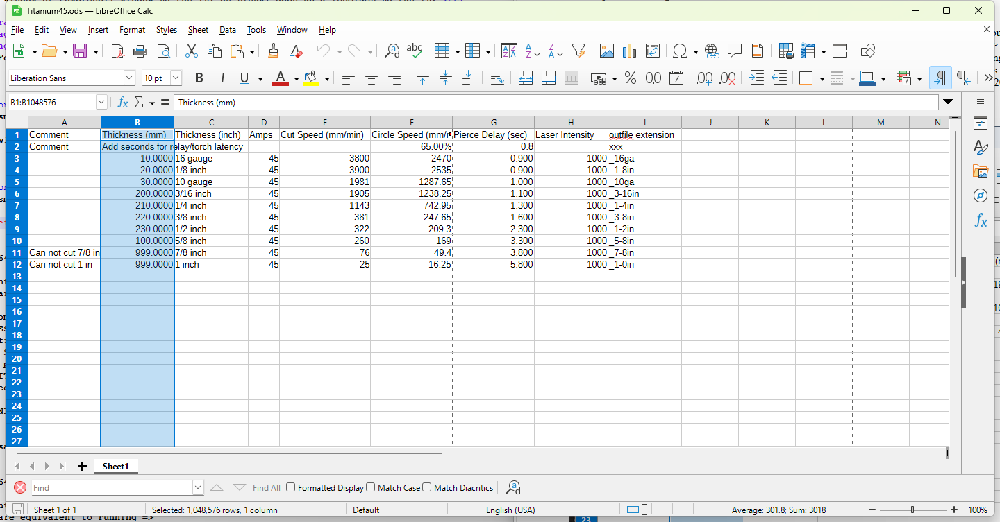
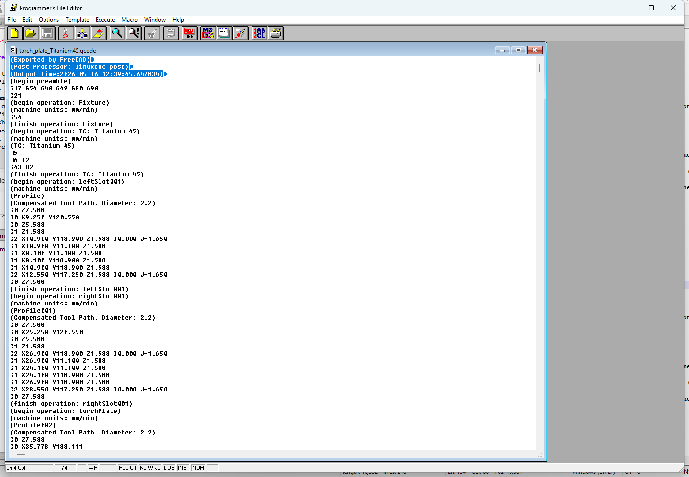
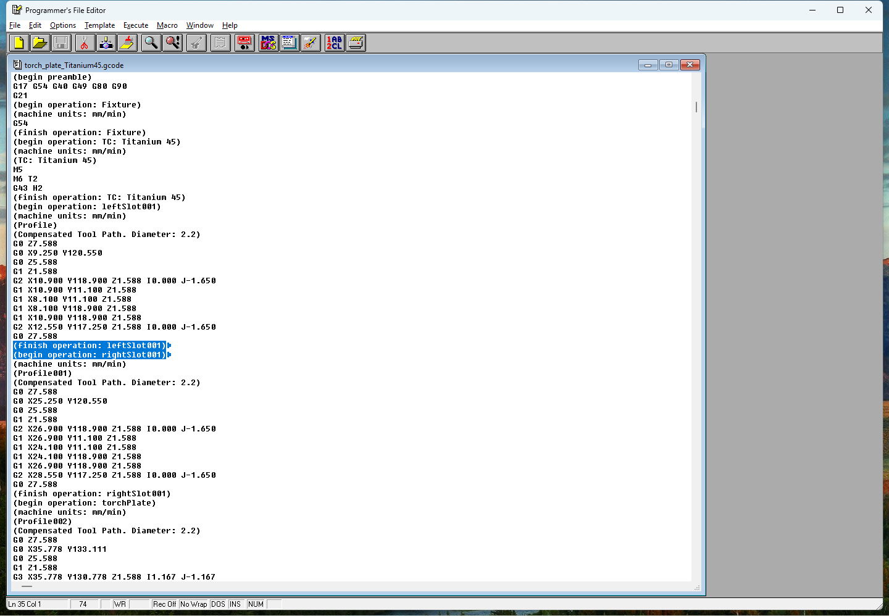
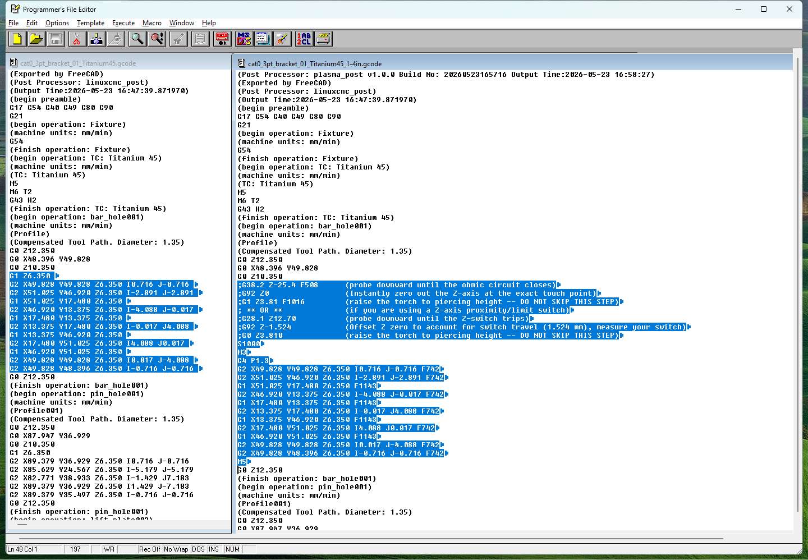
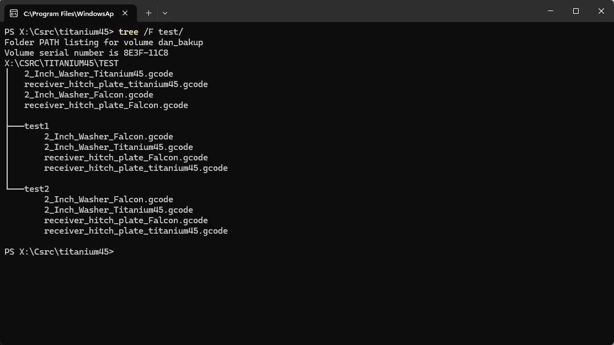
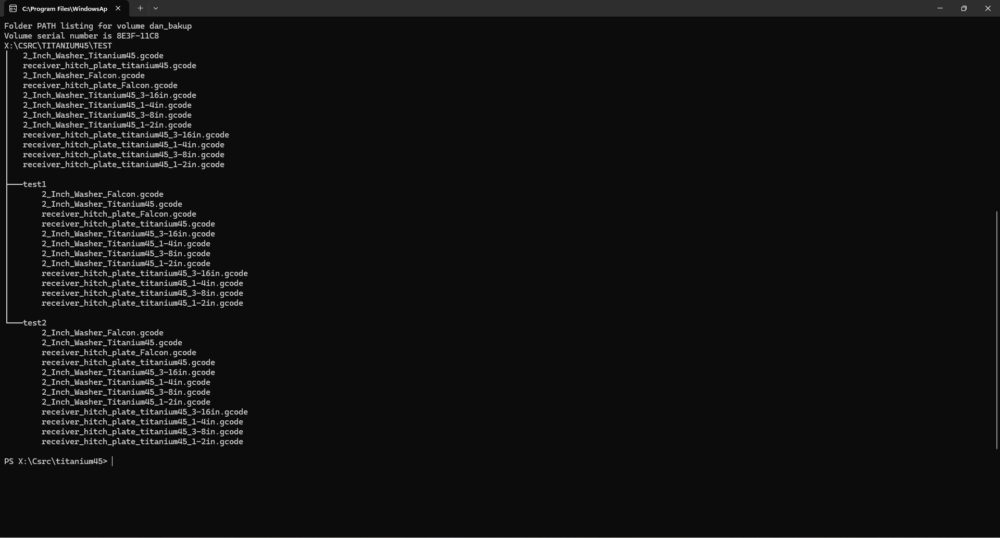

I DO NOT HAVE A THC (Torch Height Controller). Therefore, the Z-Axis movements produced by linuxcnc are ignored by my laser engraver.
If you have a THC, the linuxcnc Z-Axis commands may have disasterous results for your Z-Axis movements.
**
** UNLICENSE LICENSE
**
** This is free and unencumbered software released into the public
** domain.
**
** Anyone is free to copy, modify, publish, use, compile, sell, or
** distribute this software, either in source code form or as a
** compiled binary, for any purpose, commercial or non-commercial,
** and by any means.
**
** In jurisdictions that recognize copyright laws, the author or
** authors of this software dedicate any and all copyright interest
** in the software to the public domain. We make this dedication
** for the benefit of the public at large and to the detriment of
** our heirs and successors. We intend this dedication to be an overt
** act of relinquishment in perpetuity of all present and future
** rights to this software under the copyright law.
**
** THE SOFTWARE IS PROVIDED "AS IS", WITHOUT WARRANTY OF ANY KIND,
** EXPRESS OR IMPLIED, INCLUDING BUT NOT LIMITED TO THE WARRANTIES
** OF MERCHANTABILITY, FITNESS FOR A PARTICULAR PURPOSE AND
** NONINFRINGEMENT. IN NO EVENT SHALL THE AUTHORS BE LIABLE FOR ANY
** CLAIM, DAMAGES OR OTHER LIABILITY, WHETHER IN AN ACTION OF CONTACT,
** TORT OR OTHERWISE, ARISING FROM, OUT OF OR IN CONNECTION WITH THE
** SOFTWARE OR THE USE OF OTHER DEALINGS IN THE SOFTWARE.
**
You will find the plasma_post project on GITHUB. Search for "plasma_post" or "danmcnaul" on GitHub.
Download the plasma_post source from GitHub.
On Windows 10/11, download and unzip the W64devkit-x64 from GitHub. cd into plasma_post src and run "make release"
On Windows XP, download and unzip the W64devkit-x86 from GitHub. cd into plasma_post src and run "make release"
On Linux, ensure you have the development environment installed. cd into plasma_post src and run "make release"
If you want a debug version, run "make debug"
If you want to see what OS the make file sees, run "make info"
To compile/build this HELP file "plasma_post.chm", you need the MS HTML Help WorkShop. You can find it on the internet.
Install that first, then you can cd into the Help directory and build the plasma_post.chm file.
To build the help file on linux, you can use "chmcmd" (install fp-utils) or the MS HTML Help WorkShop (hhc.exe) via Wine.
To view this help file "plasma_post.chm" on linux, install kchmviewer
There is no installer/uninstaller for plasma_post. Plasma_post does not monkey with the windows registry or any of that nonsense. It is a command line (DOS/LINUX) program. Copy to a directory where you want it to reside. If you no longer want to use it, simply delete it. If you want Windows or Linux to be able to find it, add the directory you put it in to your PATH. Plasma_post comes in 3 flavors, plasma_post64.exe (modern 64bit windows), plasma_post32.exe (Windows 32bit i.e. WinXP), and plasma_post (modern 64bit Linux). On Windows, open up a CMD window or Powershell window to run it. On Linux, open up a TERMINAL to run it.
As stated above, you run it from the command line using parameters or "flags" to indicate what you want plasma_post to do. There are 4 basic execution types for plasma_post. For ease, I'll use plasma_post64.exe, but you might be using the other executables depending on your OS. You can mix and match short flag and long flag formats.
.\plasma_post64.exe --validate --inifile=bad.ini Validating contents of bad.ini Contents are equivalent to running => Rec #1 is a comment record. SKIPPING Rec #2 THICKNESS or SELECTION field #2 is not numeric. ERROR value found=1x0.0000 Rec #2 SPEED field #5 is not numeric. ERROR value found=8x30 Rec #2 CIRCLE SPEED field #6 is not numeric. ERROR value found=52x4.5 Rec #2 PIERCE pause field #7 is not numeric. ERROR value found=0.x00 Rec #2 INTENSITY field #8 is not numeric. ERROR value found=1x00 Rec #3 incorrect number of fields. Expecting 9. Found 10 SKIPPING Either your INI file bad.ini is empty or all the records are bad. No records passed the edits.
.\plasma_post64.exe -V -I Titanium45.ini Validating contents of Titanium45.ini Contents are equivalent to running => plasma_post myGCodeIn.gcode -F 5080 -C 3302 -P 1.6 -S 1000 -O "_16ga" plasma_post myGCodeIn.gcode -F 3050 -C 1982 -P 1.6 -S 1000 -O "_1-8in" plasma_post myGCodeIn.gcode -F 2400 -C 1560 -P 1.6 -S 1000 -O "_10ga" plasma_post myGCodeIn.gcode -F 1650 -C 1072 -P 1.7 -S 1000 -O "_3-16in" plasma_post myGCodeIn.gcode -F 1140 -C 741 -P 1.9 -S 1000 -O "_1-4in" plasma_post myGCodeIn.gcode -F 630 -C 409 -P 2.1 -S 1000 -O "_3-8in" plasma_post myGCodeIn.gcode -F 300 -C 195 -P 2.7 -S 1000 -O "_1-2in" plasma_post myGCodeIn.gcode -F 200 -C 130 -P 3.5 -S 1000 -O "_5-8in" NOTE => LaserGRBL expects speeds are given in mm/min. Do NOT specify in/min

I use LibreOffice Calc to make my iniFiles. MS Excel or GoogleSheets will also work. Save the file as a ".CSV" (Comma Separated Values), except don't use the Comma
to separate the values. You must use the "|" (PIPE) character. You'll find the "|" above your enter key, shift-backslash on your keyboard. Your file may only have 9 fields/columns
and the fields must be in the order shown in my image above.
Field-01 Comment -- Placing any value, including a space, in this field will make the row a comment. Plasma_post will skip this row/record as a comment.
Field-02 Thickness -- Your selector field. Required. Must be Numeric. This is the field that the "-T" is searching for. You can have duplicate values. This is handy if You
always want to produce two or more output files for your parts.
Field-03 A thickness descriptor field for your convience. A way to document your setting. This field must be present, but isn't used by plasma_post processing.
Field-04 Amps, another descriptor field for your convience. A way to document the amperage setting you may set on your plasma cutter before cutting your parts.
Field-05 Cut Speed -- Required. Must be Numeric. Must be in mm/min. This is the speed on straight away cuts. This results in the "Fnnnn" G-Code on G1 statements.
Field-06 Circle Speed -- Required. Must be Numeric. Must be in mm/min. This is the speed on arc/circle cuts. This results in the "Fnnnn" G-Code on G2/G3 statements.
Field-07 Pierce Delay -- Required. Must be Numeric. Must be in seconds. This is the time to wait before moving the torch. This results in the "Pnn.nn" G-Code on G4 statements.
My HF Titanium45 requires approximately 1.5 seconds to be added to the pierce to give the machine time to start and generate a plasma arc.
Field-08 Laser intensity -- Required. Must be Numeric. This is percentage of voltage to send down the PWM wire to trigger the relay. For modern Laser Engravers, use 1000 (100% or 5vdc).
For older Laser Engravers this might be 256. This results in the "S1000" G-Code.
Field-09 Outfile extension -- Required. Any valid filesystem file name characters. These characters will be added to the "stem" of your G-Code file name when producing the output file.
Your iniFile can be named what ever you wish. You can have multiple iniFile(s). I have an iniFile for the Falcon laser engraver for different thicknesses of cardboard, and a iniFile for the
HF Titanium45. You can have duplicate rows in your iniFile sharing the same "Thickness" setting (Field-02). While I'm building stuff, I often drag steel out of the scrap pile. Most times for me,
there is little difference between cutting the part out of 3/16" or 4/16" steel. So, I may duplicate those entries and give them the same "Thickness" (Field-02) number, but with different speed settings.
Be Creative!
As stated, I use the "Parts Design" and "Sketcher" workbenches in FreeCAD v1.1 to design my parts. Then I use the "CAM" workbench in FreeCAD v1.1 to create my Jobs. These
are the tool paths needed to cut the parts out. I use the linuxcnc post processor in CAM to generate the G-Code. I create 2 Jobs for each part. One to cut the part out in cardboard using the laser engraver.
Another Job to cut the part out in steel using the CNC plasma cutter. I standardized the naming convention of these linuxcnc G-Code output file names. This makes referencing these files via plasma_post simpler.
You may wish to do something similar, but totally up to you. I chose the format for my linuxcnc G-Code files as %d_%j.gcode. %d in FreeCAD is the name of your project/part. %j in FreeCAD is the name of the active
Job. Of course, when I create the JOBs in CAM workbench, I name them appropriately (i.e. Titanium45 or Falcon10w). The PATH to the .gcode files is on my NAS so that I can reach those files from the shop.



-S myGCodeIn.gcode 3308Clearly, you meant to say
-S 3308 myGCodeIn.gcodeI waffle back and forth between putting it at the front and putting it at the end of the command line. If you write bash scripts or bat files to automate plasma_post execution, you'll probably hit on a standard.

.\plasma_post64.exe -I Titanium45.ini -T ">=200" 'test/*_Titanium45.gcode'
